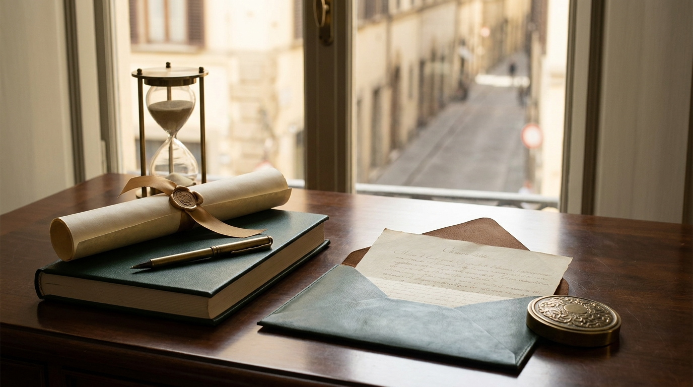

Patto di non concorrenza valido anche senza minimo garantito
Il patto di non concorrenza limita l'attività del lavoratore dopo la fine del rapporto. La Cassazione chiarisce che resta valido anche in assenza di un minimo garantito, purché il corrispettivo pattuito sia congruo e determinabile. Una precisazione che incide su come datori e dipendenti devono redigere e valutare queste clausole.

Il caso
Il patto di non concorrenza è l'accordo con cui il lavoratore si impegna a non svolgere, dopo la cessazione del rapporto, attività in concorrenza con il datore di lavoro. In cambio riceve un corrispettivo.
La questione affrontata dalla Cassazione riguarda la struttura di quel corrispettivo. Ci si chiedeva se il patto fosse nullo quando manca un "minimo garantito", cioè una somma fissa assicurata al lavoratore a prescindere da ogni altro parametro. La Suprema Corte ha risposto in senso negativo: il minimo garantito non è un requisito di validità.
Inquadramento normativo
Il patto di non concorrenza è disciplinato dall'art. 2125 del Codice civile, che ne richiede quattro condizioni: forma scritta, previsione di un corrispettivo a favore del lavoratore, limiti di oggetto, tempo e luogo. In mancanza anche di uno solo di questi elementi il patto è nullo.
Il punto critico è il corrispettivo. La giurisprudenza ha sempre richiesto che fosse pattuito e che non fosse simbolico o iniquo. Qui entra in gioco l'art. 1346 c.c., norma generale sull'oggetto del contratto: l'oggetto deve essere possibile, lecito, determinato o determinabile.
È proprio su questa nozione di determinabilità che ruota la decisione. La Cassazione ha ritenuto che il corrispettivo del patto possa essere ancorato a un parametro variabile — ad esempio una percentuale della retribuzione percepita durante il rapporto — senza che sia necessario fissare in anticipo una soglia minima fissa. Ciò che conta è che il criterio di calcolo sia chiaro e che l'importo finale risulti congruo rispetto al sacrificio imposto al lavoratore.
Implicazioni pratiche
Per il datore di lavoro la pronuncia offre maggiore flessibilità nella costruzione della clausola: il compenso può essere parametrato a variabili legate alla durata del rapporto o alla retribuzione, senza l'obbligo di garantire un importo minimo predeterminato.
Questa flessibilità ha però un limite preciso. Se il meccanismo di calcolo conduce a un corrispettivo sproporzionatamente basso rispetto al vincolo imposto, il patto resta esposto al rischio di nullità per inadeguatezza del compenso. La congruità si valuta caso per caso, considerando ampiezza territoriale, durata e tipo di attività vietata.
Per il dipendente la decisione è un invito alla cautela. L'assenza di un minimo garantito non significa automaticamente che il patto sia squilibrato, ma impone di verificare che il criterio variabile produca comunque un compenso effettivo e adeguato. Clausole che legano il corrispettivo a condizioni difficilmente realizzabili rischiano di tradursi in un sacrificio non retribuito.
Resta fermo che il corrispettivo deve essere effettivo: un importo meramente nominale o subordinato a eventi che lo svuotano di contenuto non supera il vaglio dei giudici.
Cosa fare in concreto
- Verificate il meccanismo di calcolo del compenso: assicuratevi che il criterio sia espresso in modo chiaro e che permetta di quantificare l'importo finale.
- Valutate la congruità rispetto al vincolo: confrontate il corrispettivo con l'ampiezza territoriale, la durata e l'estensione dell'attività vietata.
- Mettete sempre il patto per iscritto e indicate con precisione oggetto, tempo e luogo del divieto.
- Diffidate degli importi simbolici o condizionati: un compenso puramente nominale o subordinato a eventi incerti espone il patto a nullità.
- Consigliamo una revisione tecnica della clausola prima della sottoscrizione, sia in fase di assunzione sia in caso di rinnovo contrattuale.
Conclusione
La decisione conferma un principio di sostanza: nel patto di non concorrenza conta l'adeguatezza effettiva del corrispettivo, non la presenza di una formula rigida come il minimo garantito. La determinabilità del compenso, ai sensi dell'art. 1346 c.c., è sufficiente, ma solo se accompagnata dalla congruità richiesta dall'art. 2125 c.c. Datori e lavoratori dovrebbero quindi concentrare l'attenzione sul risultato economico della clausola, più che sulla sua etichetta formale.
---
*Contributo informativo a cura di Tamburro & Partners - Avv. Giuseppe Tamburro. Non costituisce parere legale.*
Ogni storia di lavoro ha i suoi tempi.
Se gestisci HR e vuoi un confronto su contenzioso, ispezioni o licenziamenti, scrivi allo studio. Ti rispondiamo entro un giorno lavorativo.